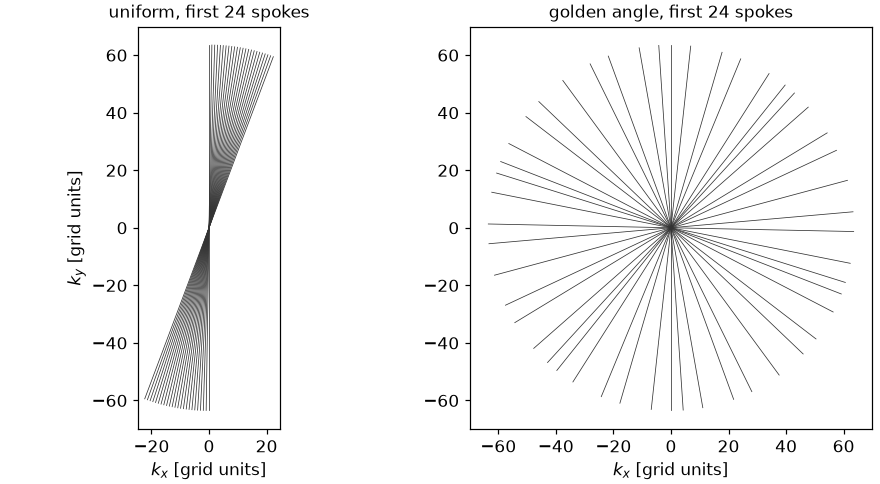
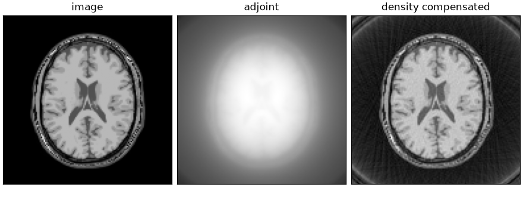
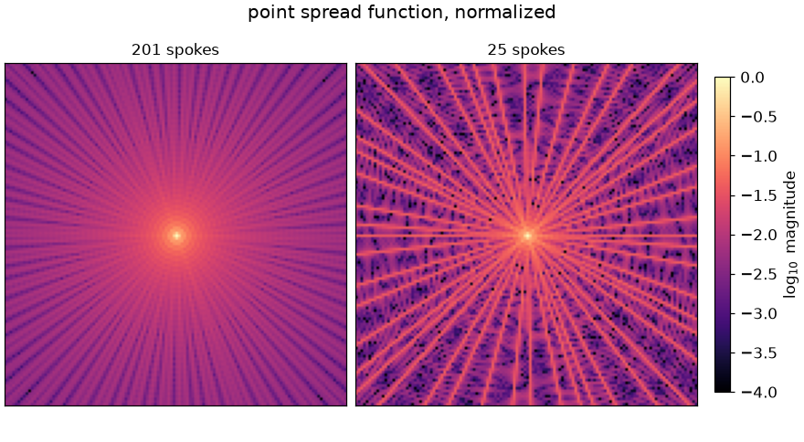

Note
Go to the end to download the full example code.
Trajectories and transforms#
The non-Cartesian interfaces: the trajectories
bartorch.tools.traj() generates, the non-uniform Fourier transform along
one, the density compensation an adjoint reconstruction needs, and the point
spread function the normal operator convolves with.
Every non-Cartesian transform in bartorch is computed by FINUFFT [1], which evaluates
to a requested tolerance, with the sum over the \(N\) voxels \(m\) of an image of \(n_d\) voxels along dimension \(d\), and \(k_j\) in grid units. The spreading kernel and the deapodization are FINUFFT’s, sized from the tolerance: Non-Cartesian sampling states the conventions and the accuracy.
The phantom is built as in From k-space to image; the cell that does it is hidden on this page and present in the script this page can be downloaded as.
import csv
import time
from pathlib import Path
import brainweb_dl
import numpy as np
import torch
from brainweb_dl import get_mri
import bartorch
import bartorch.tools as bt
from bartorch import linop
SIZE = 128
Trajectories#
A trajectory is (*encoding, shots, samples, 3) in grid units: the
coordinates of every sample, in units of the k-space cell of the image it
encodes, so a readout of SIZE samples runs from \(-n/2\) to
\(n/2\) for an image of \(n\) voxels along the readout. The third
component is \(k_z\), zero throughout for a two-dimensional trajectory,
and whether it is used determines whether the transform is two- or
three-dimensional.
Successive spokes are separated either by \(\pi\) over their number, which tiles k-space uniformly for one frame, or by the golden angle, which tiles it approximately uniformly for any number of consecutive spokes [2]. Only the second lets an acquisition be cut into frames after it was measured, as Dynamic golden-angle radial MRI does.
(201, 128, 3): 201 shots of 128 samples

The transform#
bartorch.nufft() samples an image along a trajectory and
bartorch.nufft_adjoint() maps samples back onto a grid. The samples an
acquisition would measure are the transform of the image; below they are
checked against the sum that defines them, evaluated in double precision over
one spoke, which is a reference outside BART and outside FINUFFT.
samples = bartorch.nufft(image, golden)
print(f"samples {tuple(samples.shape)}")
spoke = golden[0].real.to(torch.float64)
axis_y, axis_x = torch.meshgrid(
torch.arange(SIZE) - SIZE // 2, torch.arange(SIZE) - SIZE // 2, indexing="ij"
)
phase = (
-2j
* np.pi
/ SIZE
* (
spoke[:, 0:1] * axis_x.reshape(1, -1).to(torch.float64)
+ spoke[:, 1:2] * axis_y.reshape(1, -1).to(torch.float64)
)
)
explicit = torch.exp(phase) @ image.to(torch.complex128).reshape(-1, 1) / SIZE
difference = float((explicit - samples[0]).abs().max() / explicit.abs().max())
print(f"largest relative difference from the explicit sum: {difference:.1e}")
samples (201, 128, 1)
largest relative difference from the explicit sum: 1.9e-04
The transform is planned to a tolerance rather than computed exactly, and the
difference above is within the tolerance it was planned with: a thousandth by
default, on a grid a quarter larger than the image. The default is chosen for
reconstruction, where the transform’s error is intended to stay small beside
the effect of noise and undersampling; bartorch.linop.NUFFT takes
oversampling and width where more accuracy is needed.
Density compensation#
The adjoint is not the inverse. Every spoke passes through the centre of k-space, so the radial sampling density falls as \(1/\lvert k \rvert\) and the adjoint overweights low frequencies. The weight that compensates for it is the inverse sampling density [3], which for radial sampling is proportional to the distance from the centre.
radius = torch.linalg.norm(golden.real[..., :2], dim=-1, keepdim=True)
weights = radius.clamp(min=0.25).to(torch.complex64)
plain = bartorch.nufft_adjoint(samples, golden, image_shape=(SIZE, SIZE))
compensated = bartorch.nufft_adjoint(samples * weights, golden, image_shape=(SIZE, SIZE))

The uncompensated adjoint is the image convolved with the point spread function, the inverse Fourier transform of the sampling density; the density is concentrated at the centre of k-space, so the result is blurred. The compensated adjoint resolves the tissue boundaries. Neither recovers the k-space the trajectory does not reach: a radial acquisition samples a disc, so the frequencies in the corners of the Cartesian grid are missing whatever the weights are.
The normal operator#
bartorch.linop.NUFFT is the transform as an operator, and carries the
weights and a subspace basis where there are any, because its normal operator
\(A^H A\) is built over both. That normal is a convolution with a point
spread function on a doubled grid rather than a transform each way
[4], which is what a solver applies once per iteration.
A = linop.NUFFT(golden, image_shape=(SIZE, SIZE))
repeats = 5
start = time.perf_counter()
for _ in range(repeats):
toeplitz = A.gram()(image)
convolution = (time.perf_counter() - start) / repeats
start = time.perf_counter()
for _ in range(repeats):
pair = A.H(A(image))
transforms = (time.perf_counter() - start) / repeats
print(f"A^H A as a convolution {1e3 * convolution:6.1f} ms")
print(f"A^H A as two transforms {1e3 * transforms:6.1f} ms")
print(f"relative difference {float((toeplitz - pair).abs().max() / pair.abs().max()):.1e}")
A^H A as a convolution 1.7 ms
A^H A as two transforms 7.2 ms
relative difference 2.7e-03
The two agree to a small multiple of the transform’s tolerance.
bartorch.tools.psf() computes that function on its own. Its extent is
the aliasing the trajectory produces: for a fully sampled radial trajectory
it is a central peak with a low, broad skirt, and undersampling raises the
skirt into the streaks a radial reconstruction is known for.

A reconstruction that uses all of this – the transform, the weights, the sensitivities and the normal operator – is Radial SENSE reconstruction.
References#
Total running time of the script: (0 minutes 1.164 seconds)